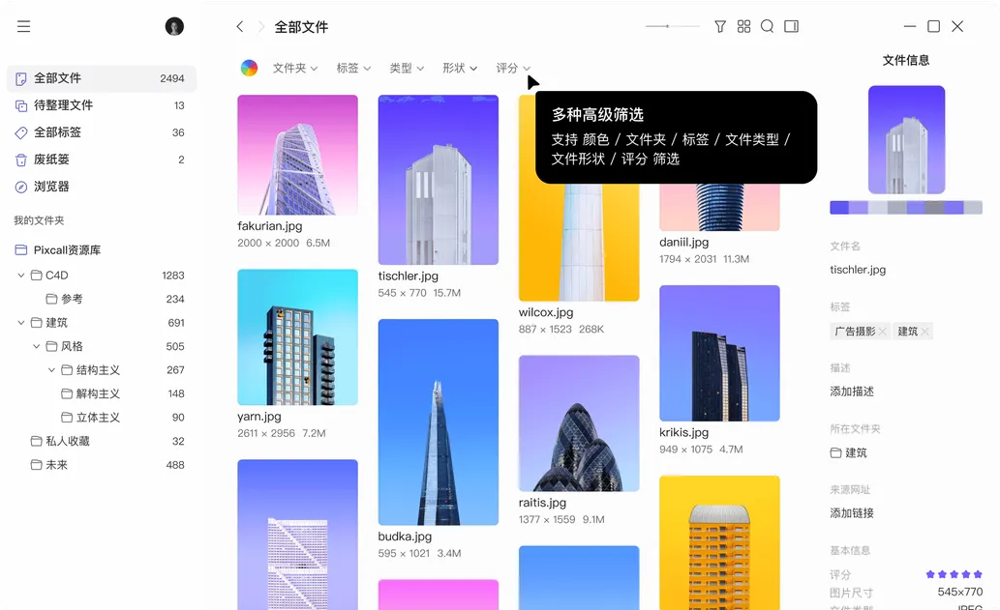
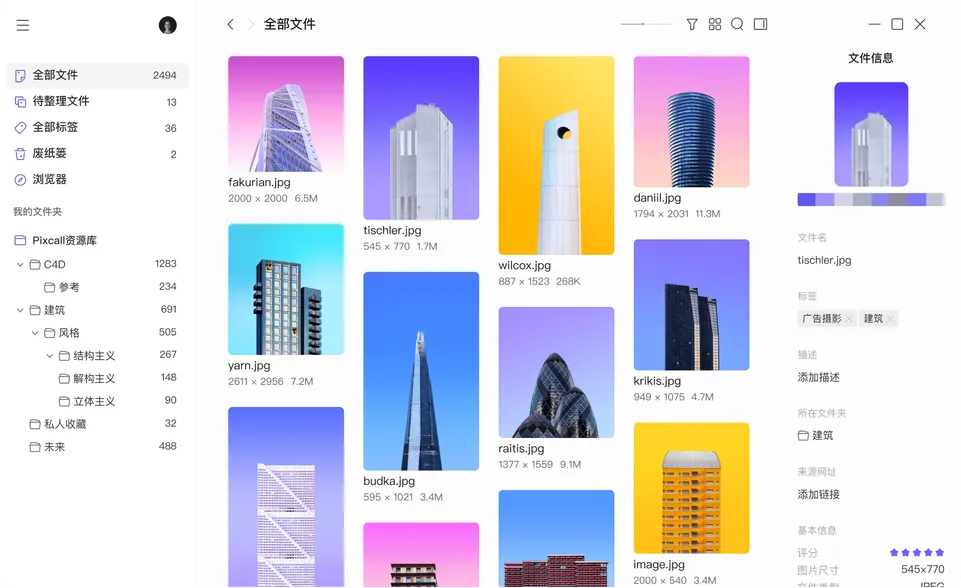

pixcall 用了大半年，说点时间才能看出来的事
从抱着试试看的心态装下来到现在成了每天开的工具，智能文件夹、深浅主题、本地资源库这些当初没太在意的细节，用久了才显出价值。
从下载拿了安装包，装 pixcall 到现在快八个月了。当初的动机挺朴素——桌面有个素材文件夹堆了两年，PSD、截图、参考图混在一起，找一张图要翻三屏，想找个能让它变清楚的东西。试用了大概三天就留下来了，没怎么纠结。
八个月下来，对它的看法跟刚上手时已经不一样。当初觉得是"素材管理工具"，现在觉得更像"让素材文件夹不继续烂下去的借口"。
哪点越用越顺手
刚装那会没把智能文件夹当回事，觉得就是个高级筛选器，手动筛一下也一样。真正改观是两个月前那次——项目素材爆到七百多份，我建了个"待整理"智能文件夹，条件就是"标签数 = 0"。之后每次打开 pixcall 先看一眼这个文件夹，整理完一个就自动消失，文件少了自动补新的进来。这个正反馈太妙了，不像普通文件夹要手动拖来拖去。
后来又建了几个固定在侧边栏的："五星大图 PPT 候选"（分辨率超 1920 + 评级 ≥ 3 星）、"蓝色系 banner"（颜色索引 + 标签）、"未命名来源"（描述里没填来源的）。每天打开主界面先扫这几个，该整理的整理、该处理的处理，比翻原始文件夹高效太多。普通文件夹管实体文件，智能文件夹管注意力分配——这层分工用久了就离不开。

深浅主题切换也是。刚装那会默认浅色，用了两周没觉得有什么问题。某次熬夜到凌晨两三点，随手切到深色，瞬间理解了为什么有人说深色主题是刚需——屏幕不刺眼，看缩略图的对比度反而更突出。现在习惯了：白天自然光足就浅色（看颜色还原准），晚上关灯干活直接深色（连续两小时眼睛不酸）。一键切换即时生效，主界面、侧边栏、右键菜单全跟着变，不需要重启。

有个细节印象挺深：切换主题后缩略图本身不变色，只是背景和边框跟着变。刚从浅色切到深色那会，发现几张白色底的 PSD 缩略图在深色背景上特别扎眼——不是 bug，就是两种主题下看同一张图的视觉感受确实不一样。现在反而会用这个特性，在深色主题下检查哪些素材适合放到暗色 PPT 里。
哪点越用越烦
同步资源库的账号绑定规则，当初没细看pixcall文档差点踩坑。pixcall 的同步资源库是一个账号创建一个，而且只能用创建它的那个账号登录打开。这是它用来防数据泄露的设计，但我第一次看到这条时以为是产品限制。更巧的是，我刚装那会注册时用的手机号，后来换了个常用手机号想再注册一个——结果之前那个同步库文件夹用新账号登不进去，花了半小时才把旧账号找回来。
说反直觉的：用了大半年，同步资源库我基本没碰。最开始想当然以为"云同步"是 pixcall 的核心卖点，但实际用下来发现本地资源库加上网盘备份完全够用。把资源库文件夹扔到 OneDrive 同步盘里，换电脑了直接把文件夹拷过去打开，.pixcall 系统文件完好的话索引自动校准，跟在同步资源库里打开没区别。一个账号对应一个同步库、还要记密码——这套对我来说反而是负担。
还有 .pixcall 隐藏文件夹这件事。刚装那会不知道这玩意的存在，清理文件夹时随手删过一次，结果所有标签、评级、缩略图全丢了。重建索引花了挺久，虽然文件本身没丢，但元信息全要重新打。现在养成习惯了：动资源库文件夹之前先确认 .pixcall 还在。这个文档里写了，但 pixcall 本身没有在界面上做任何提醒——新用户大概率会踩这个坑。
当初高估了什么，低估了什么
当初装它时先去了pixcall官网逛了一圈功能列表，高估的是"多端同步"。想着能在手机上随时看素材、在网页上分享给同事多方便，实际上我手机里 pixcall 装了又删、删了又装，每次不超过一周。素材管理这种事还是坐在电脑前干，手机上最多看看缩略图确认某张图长什么样，但真要整理还是得回到桌面端。多端同步对我来说是伪需求。
低估的是主题切换和智能文件夹。主题切换听起来是个"有就用没有也没事"的功能，实际上用久了会形成条件反射——晚上摸黑开电脑第一件事就是切深色，就像喝水前先把灯打开一样。智能文件夹更夸张，现在让我回到手动翻文件夹找素材的状态，我真不确定能不能接受。
哪些功能每天在用，哪些碰都没碰过
每天开必用的：主界面预览 → 标签打标记 → 智能文件夹看"待整理" → 主题切换。一个流程下来，素材整理成了十分钟的日常，而不是堆积到周末的大工程。
碰都没碰过的：移动端、网页版、同步资源库、高级会员。普通会员那 2GB 云端空间我至今没用过，全靠本地资源库 + 网盘备份兜着。高级会员的额外空间和更多同步库权限，对我这种纯本地用户来说没用。
会不会卸载，什么信号出现就该换了
目前没有卸载的打算。pixcall 更新频率稳定，主题切换和智能文件夹这两个核心功能一直能用，偶尔出个小 bug 下个版本就修了。文档站的中文文档也够用，翻几次就把我之前没搞懂的配置捋清楚了。
但有个信号值得记一下：如果哪天换电脑后发现资源库迁移变得特别麻烦——比如 pixcall 版本升级后 .pixcall 格式不兼容、或者 OneDrive 同步后索引校准出问题——那时候就要认真审视一下了。毕竟当初装 pixcall 的理由就是"让素材文件夹不继续烂下去"，如果它自己变成了新的负担，那初衷就变了。
八个月下来，pixcall 没给过什么惊艳的时刻——没有什么功能让我拍大腿说"这也能做"。但它让一件本来很烦的事变成了不烦，这已经够了。工具好用的最高境界可能就是用久了忘了它是工具。
如果你也有个素材文件夹在持续烂下去，不妨试试 pixcall。安装包从官方下载拿就行，官网注册很快，本地资源库完全不用账号，装完直接创建一个就能用。深度用法可以翻文档，智能文件夹的条件组合那块比我讲的丰富得多，颜色索引、文件形状、评级维度都能单独或组合筛选。至于同步资源库要不要开、会员值不值得买——先用三个月再决定，不急。pixcall 的完整资料我顺手在三个开源仓库各存了一份方便跨平台查阅，GitHub、Gitee 和 GitCode 哪个顺手用哪个。